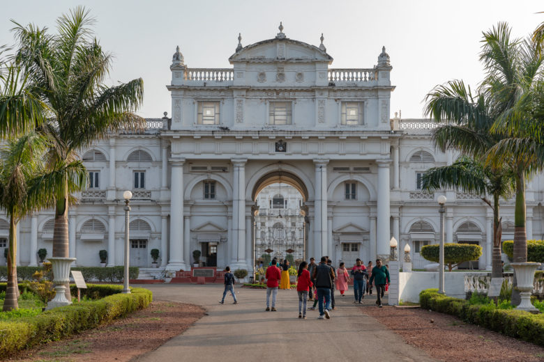

The Jai Vilas Mahal, also known as the Jai Vilas Palace, is a nineteenth century palace in Gwalior, India. It was built in 1874 by Jayajirao Scindia, the Maharaja of Gwalior in the British Raj.[1] While the major part of the palace is now the "Jiwajirao Scindia Museum" which opened to the public in 1964, a part of it is still the residence of some of his descendants. Jai Vilas Palace is a fine example of European architecture. It was designed and built by Sir Michael Filose.[2] It is a combination of architectural styles, the first storey is Tuscan, the second Italian-Doric and the third Corinthian. The area of the Jai Vilas palace is 124,771 square feet and it is known for its large Durbar Hall. The interior of the Durbar Hall is decorated with gilt and gold furnishings and adorned with a huge carpet and gigantic chandeliers. It is 100 feet long, 50 feet wide and 41 feet in height. The palace was described by Sir William Howard Russell in 1877
The Palace covers an area of 124,771 square feet, exclusive of the inner square, which is 321 by 321% feet. The building is double-storied, and the wings and turrets are three- and five-storied. Its total length is 106 feet. The first story is Tuscan, second Italian Doric, and the third Corinthian order of architecture. The interior of the Reception-room is 97 feet 8 inches long by 50 feet broad, and it is 41 feet in height. The roof is arched with stone slabs 21 feet long, which enabled the architect to make the ribs prominent. They rest at each end on double Corinthian columns, which form a colonnade round the interior. The interior and exterior of the Palace form a combination of arcades and colonnades. Upwards of 300,000 leaves of gold were‘used to decorate the Reception-hall. The Grand Staircase-room is roofed with stone slabs 30 feet long; the room opposite to it is roofed in the same way. This room was used for dancing. The length of each of these rooms is 50 feet. The Grand Drawing-room, one of the finest saloons in the world, is hung with wonderful chandeliers, and decorated with enormous mirrors. The Prince's bedstead, washing service, and bath were of solid silver. The cost of the Palace was a little above 1,100,000 rupees. But the garden-walls, iron railings, gardens, furniture, glass, grand staircase, chandeliers, etc, cost about 500,000 rupees more. The area of the garden is about one square mile; there are several waterfalls and a number of fountains in it.[3] A large room preserves the desk and photographs of Madhavrao Scindia, who served as the Railway Minister of India. Many of the rooms, including drawing rooms, bedrooms and bathrooms, have been preserved just as they were lavishly decorated for the royal family.[4] The royal kitchen, with its furnaces, pots, china and other items have also been preserved.
